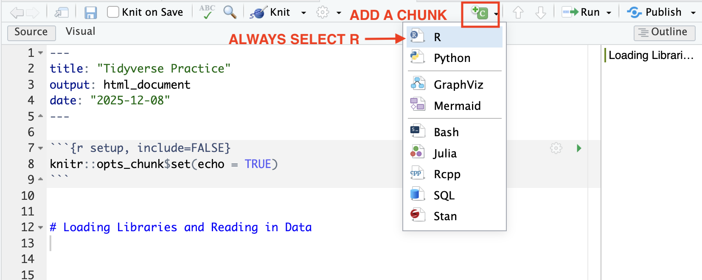
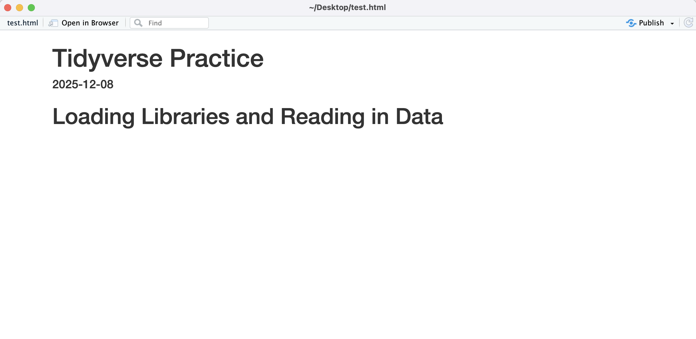

## this is a commentBase R and Tidyverse Basics
This chapter will introduce you to the basics of working with base R and the Tidyverse. After completing these exercises, you should be able to:
- Create a .Rmd and save it to your GEOG215 folder
- Use basic text and chunk formatting to create a readable knitted .Rmd file (.html)
- Execute the basics of base R by creating comments, assigning objects, and using base R functions
- Read in data using a relative file path
- Use the
mutate,filter,rename,summarise, andselectcommands from the tidyverse package - Create a descriptive statistics table using the gt package
- Create basic visualizations and describe data distributions (histogram, boxplot/violin plot, scatterplot, bar chart)
We will use the following datasets:
- Data on chronic school absence rate for North Carolina Public Schools before and after the Covid-19 pandemic from the North Carolina Department of Public Instruction
- North Carolina census tract rurality definitions (RUCA codes) from the USDA Economic Research Service and the NC Rural Center. RUCA codes establish urban cores and the census tracts that are the most economically integrated with those cores through commuting. The NC Rural Center defines rurality as areas with less than 250 residents per square mile.
Creating a .Rmd and Reading Data
To follow along with this tutorial, you should create a new .Rmd document and save it into your GEOG215 folder. Once you’ve saved it, close the file and re-open it. Every time you see code below, you should copy it to your own document!
Q1: Once you re-open the folder, what is your current working directory? How do you know?
Remove all the code chunks except for the setup chunk. Below the setup chunk add a “first-level header” called “Loading Libraries and Reading in Data”.

Then add a chunk below this text and load the tidyverse package. Format that chunk so that it is not included in the knitted document.
You will read in the school absence data directly from Google Drive using the following command:
absences <- read_csv("https://drive.google.com/uc?export=download&id=1yH50dkdLLPx0AiHbvzWoLtSSnIY-1moh")
To practice reading in data locally, download the NC Rurality Data to your GEOG215 folder (or whatever subfolder you have your .Rmd file saved to). Then, write a relative file path to read in that file. You will use the command
rurality <- read_csv("RELATIVEFILEPATH")
Your .Rmd should now look something like this

Running Chunks and Knitting
We have completed our code chunk for loading libraries and reading in data. Now we can”Run” or evaluate that code. We can evaluate a code chunk by clicking the green arrow. Once you’ve evaluated the chunk, the datasets should show up in your Environment. Those are now “Objects”

Now practice knitting your document using the Knit button on the top panel. This should create a new .html file that will be saved in your working directory. The file will open in a new window.

Q2: Why does the knitted document not include our code?
Basic R Commands
Add a new first level header called “Practicing Basic R Commands”. Then add a code chunk below that.
Making Comments
Any time you write a command, you will want to include a descriptive comment above it. To make a comment, we use this formatting.
Basic Math
Add the following commands to your code chunk. In addition to running a full chunk, you can also run a single line of code by clicking “Command” and “Return” on a Mac or “Control” and “Enter” on a PC. Run each of the following commands.
## basic addition
4 + 3
## basic division
123.1 / 3.445
##exponents
5^2Q3: Where is the output printed when you run those commands?
Boolean Operators
Boolean logical operators return either a true or a false based on the conditions. Add these commands to your code chunk and run each one.
## is greater?
2 > 5
## is equal?
3 == 3
## is greater or equal?
10000 >= 1
## is less?
(3 * 5) < 20Functions
Functions can be though of as “actions”. Base R already has many built in functions. The basic setup of a function is function(argument, ...). Add these commands to your code chunk and run each one.
#sum
sum(2:963)
#sum
mean(c(1, 10, 100, NA))
#sum, remove na
mean(c(1, 10, 100, NA), na.rm = TRUE)Assigning and Printing Objects
So far, every command we’ve run has been evaluated in the console, which means R immediately prints the result at the bottom of the chunk. This happens any time you type an expression without saving it as an object.
Saving as an object means that the result of that command is stored in our environment (like the data we read in). To create objects, we use the <- command. To see the output in the console, you need to print the object. The benefit of using objects is that we can “call” that object in later commands without having to rewrite the whole command over again. Add these commands to your code chunk and run each one.
## save an object
math_object <- 4 + 3
## print an object
math_objectData Types
R works with several fundamental data types. Remember that the data type has to do with the data values:
- Numeric: numbers with decimals
- Integer: whole numbers
- Character: text data (strings)
- Logical: True/False values
- Factor: Categorical data with predefined levels
- NA: Missing data
You can check the data type using the class() command. Add these objects to your code chunk. Then write a command to check the data type of each object.
x <- 5
y <- 10L #R stores numbers as numeric, unless you specify
text <- "North Carolina" #Try running this without the quotations
sample <- "10" #try adding sample to x. What happens? Why?
logical <- 3 > 1
rural <- factor(c("Urban", "Rural"))Q4: What happens if you values are not the expected data type? For instance, if you wanted to add sample to x?
Data Structures
R organizes data into several common structures. These structures determine how values are stored and how you can work with them. Remember that data structure has to do with how values (of any type) are stored
- Vector: Collection of items that are all the same data type
- List: Collection of items that can be different data types
- Matrix: Two-dimensional table of values, all of the same data type
- Data Frame: Two-dimensional table where columns can be different data types
You can check the structure of any object using the str() command. Add the following objects to your chunk and check the structure of each:
v <- c(1, 5, 10, 20) #note that c() is used to combine
l <- list(1, "NC", TRUE)
m <- matrix(1:6, nrow = 2)
df <- data.frame(a = 1:3, b = c("x", "y", "z"))Indexing and Subsetting
Indexing is used to select or subset elements from data structures.
[]selects elements by position[[]]extracts a single element$extracts a column by name- Logical indexing selects elements that meet a condition
Add these commands to your chunk. Run each command and add a comment based on what the command is doing.
#practice df (I made these values up!)
nc_example <- data.frame(
county = c("Wake", "Durham", "Orange", "Buncombe", "Mecklenburg"),
population = c(1130000, 330000, 150000, 270000, 1135000),
region = factor(c("Piedmont", "Piedmont", "Piedmont", "Mountain", "Piedmont")),
pct_rural = c(0.03, 0.07, 0.28, 0.35, 0.02),
has_university = c(TRUE, TRUE, TRUE, FALSE, TRUE)
)
#
nc_example[1, ]
#
nc_example[, 2]
#
nc_example[3, 1]
#
nc_example[2:4, 3]
#
nc_example$population
#
nc_example[["population"]]
#
nc_example[nc_example$population > 300000, ]Creating a New Variable
We can create new variables using the $ command. Add this command and a descriptive comment
#
nc_example$pct_urban = 1 - nc_example$pct_ruralMini-Challenge 1
Add a new first level header called “Mini-Challenge #1”. Under that header, add a code chunk. In the code chunk, write commands to do the following:
- Add a variable to the nc_example data frame called “pop_million” that calculates the population of each county in millions
- Using the nc_example data frame, create a new object called triangle_region that contains only the counties located in the Piedmont region.
- Extract the pct_rural value for Orange County
- Using the triangle-region object you created, calculate and print the mean population of the Triangle counties
- Create a new object called very_rural that returns a filtered data frame containing only counties where more than 20% of the population is rural
Basic Tidyverse Manipulation
Add a first-level header called “Using the Tidyverse”. Under the header, add a code chunk
For the most part, we will be working with a special data structure called a tibble. A tibble is tidyverse’s version of a data frame. In a tibble, each row is an observation and each column is a variable. This is called “tidy” data.
To get a basic understanding of our data, we can use the str command:
#structure of absences
str(absences)
#structure of rurality
str(rurality)You should also double-click each object in the “Environment” tab. This will open the tibble so that you can explore it.
Q5: How many rows are in the absences dataset?
Q6: How many variables are in our rurality dataset?
Q7: What is the data type of the year variable in the absences dataset?
Q8: Which of the absences variables are characters?
Basic data manipulation in the tidyverse generally involves “piping”. Piping is the way that we can “chain” operations or commands and it looks like this: |> (in documentation you might also see a pipe written like this %>%). Run each of the following commands and add a descriptive comment above it.
absences |> slice_head(n = 5)
absences |> select(1)
absences |> select(rural)
absences |>
summarise(mean_percent = mean(pre_covid_pct))
absences |>
summarise(max_percent = max(after_covid_pct))
rurality |> summarise(n_rural = sum(nc_rural_center == "Rural"))
summary <- absences |>
summarise(max_before_covid = max(pre_covid_pct), max_after_covid = max(after_covid_pct))Q9: Why wasn’t the last command printed to the console?
Q10: Write a command that creates an object called metro_core and counts the number of observations that have a ruca_code of “Metropolitan Core”
Usually, unless we are doing basic data exploration, we want to save our manipulated data as objects. You can either “re-write” an object by using the same name, or you can re-name the manipulated object. Run each of the following commands and add a descriptive comment above it.
#
non_rural_data <- absences |> filter(rural == "non-rural")
#
pre_covid <- absences |> select(agency_code, pre_covid_pct)
#
renamed_absences <- absences |> rename(pre_covid_ratio = pre_covid_pct, after_covid_ratio = after_covid_pct)
#
added_column <- renamed_absences |> mutate(change = after_covid_ratio - pre_covid_ratio)
#
logical <- renamed_absences |> mutate(high_absence = ifelse(pre_covid_ratio > .25, 1, 0))
#
logical_rural <- rurality |> mutate(highly_rural = ifelse(ruca_code %in% c("Small town low commuting", "Rural area", "Small town core"), "Highly Rural", "Not Highly Rural"))Q11: Write a command that creates an object called high_absence_schools that filters the logical object to just schools that have a high absence rate before Covid.
Q12: Write a command that creates an object called urban that filters the rurality object to just observations that are “Metropolitan high commuting” or “Metropolitan core”
Descriptive Statistics
Descriptive statistics allow us to understand the distribution of our dataset. We can use a similar command structure to create almost all of the descriptive statistics tables in our class. Add these commands to your code chunk and run each one.
##Notice that you need to add these libraries. You might need to install them.
library(e1071)
library(gt)
#calculate descriptive statistics
pre_covid_stat <- absences |> select(pre_covid_pct) |>
summarise(
n = n(),
num_na = sum(is.na(pre_covid_pct)),
mean_pct = mean(pre_covid_pct, na.rm = TRUE),
median_pct = median(pre_covid_pct, na.rm = TRUE),
sd_pct = sd(pre_covid_pct, na.rm = TRUE),
variance_pct = var(pre_covid_pct, na.rm = TRUE),
mean_dev = mean(abs(pre_covid_pct - mean(pre_covid_pct, na.rm = TRUE)), na.rm = TRUE),
cv_pct = sd_pct / mean_pct,
min_pct = min(pre_covid_pct, na.rm = TRUE),
max_pct = max(pre_covid_pct, na.rm = TRUE),
skewness = skewness(pre_covid_pct, na.rm = TRUE),
kurtosis = kurtosis(pre_covid_pct, na.rm = TRUE)
)
##this will format the table for display
display_table <- pre_covid_stat |> pivot_longer(everything(), names_to = "Statistic", values_to = "Value") |>
gt() |>
tab_header(
title = "Chronic Absences at NC Public Schools before Covid-19",
) %>%
fmt_number(
columns = everything(),
decimals = 2
)
#display the table
display_table
### CATEGORICAL DATA #####
## create a basic table of descriptive statistics for NC Rural Center Rural Definition
rural_table <- rurality |>
group_by(nc_rural_center) |>
summarise(n = n()) |> gt()
rural_tableQ13: Make a descriptive statistics table of after_covid_ratio
Q14: Make a descriptive statistics table of ruca_code
Basic Plotting with ggplot2
Data visualizations can add additional information to our descriptive statistics table. Add the following visualizations to your code chunk.
The “Language” of ggplot2
The ggplot2 package builds visualizations using a conceptual framework based on the grammar of graphics– meaning that every graph can be built from the same components. These components are a dataset, a coordinate system, and geoms (visual marks that represent data points). The basic “formula” of a ggplot is:
1) Start with the data -> ggplot(DATAFRAME,
2) Map variables to aesthetics -> aes(x = , y =, color = , size = , shape= )
3) Add layers (what kind of graph) -> + geom_***
For instance, a basic scatterplot could look like
ggplot(data, aes(x = var_for_x_axis, y = var_for_y_axis)) + geom_point()
We will work extensively with ggplot2 graphs in this class. The following examples provide a very brief introduction on using ggplot2
Histogram/ Density Plot
A histogram is a graph that displays the frequency of observations within user-set “bins”. A density plot is a smooth curve that shows the distribution of the data. The curve represents the proportion of the data in each range rather than the frequency. Both of these visualizations help us understand the distribution of our data
## create a histogram of pre covid absences
#absences is our data, x is the variable for x axis (no y axis with histograms, since it is frequency)
#binwidth is how large each bin is
#alpha sets the transparency
#labs adds labels
ggplot(absences, aes(x = pre_covid_pct)) +
geom_histogram(binwidth = .05, fill = "lightgrey", color = "black", alpha = 0.7) +
labs(
title = "Histogram of Pre Covid Absences",
x = "Absence Ratio",
y = "Frequency"
)
## create a density plot of pre covid absences
ggplot(absences, aes(x = pre_covid_pct)) +
geom_density(fill = "lightgrey", color = "black", alpha = 0.7) +
labs(
title = "Density Plot of Pre Covid Absences",
x = "Absence Ratio",
y = "Proportion"
) Q15: Make a histogram and density plot of after covid absences
Boxplot
A boxplot is a standardized way of displaying the distribution of data based on a five-number summary: minimum, first quartile (Q1), median, third quartile (Q3), and maximum. It can also highlight outliers in the data.
## absences is the data
## y axis only (if you wanted to flip the box plot, you would use x = )
ggplot(absences, aes(y = pre_covid_pct)) +
geom_boxplot(fill = "lightgrey") +
labs(
title = "Boxplot of Chronic Absences",
y = "Ratio"
)Q16: Make a box plot of after covid absences
Violin Plot
A violin plot is a method of plotting numeric data and can be understood as a combination of a boxplot and a density plot. It shows the distribution of the data across different values.
##Look how we've layered two different plot types onto the same graph
ggplot(absences, aes(x = 1, y = pre_covid_pct)) +
geom_violin(fill = "lightgrey", bw = .05) + geom_boxplot(width=0.3) +
labs(
title = "Violin Plot of of Chronic Absences",
y = "Ratio"
) + theme(axis.title.x=element_blank(),
axis.text.x=element_blank(),
axis.ticks.x=element_blank())Q16: Make a violin chart of after covid absences
Bar Chart
A bar chart displays the count of each observations in a group. It is a useful visualization for nominal/categorical data.
#this creates the grouped dataset
grouped_rural <- rurality |>
group_by(ruca_code) |>
summarise(Count = n())
#this plots the bar plot (note that the coord_flip swtiches the axis which is better for labeling in this case)
ggplot(grouped_rural, aes(x=ruca_code, y=Count)) +
geom_bar(stat = "identity") + coord_flip() + labs(
x = "RUCA Code Category",
y = "Number of Census Tracts",
)Q17: Make a bar chart of NC Rural Center rural definition
Faceting and Grouping Plots
Faceting and grouped visualization are two ways to compare distributions across categories in ggplot2. Faceting creates separate panels for each level of a categorical variable, making it easy to see each group individually. Grouped visualization overlays multiple groups in a single plot, using color or fill to distinguish them, so you can compare distributions directly. In both cases, the variable used to define the groups must be categorical (like rural), because these techniques rely on discrete levels to separate or color the data.
##grouped visualization (see fill value)
ggplot(absences, aes(x = pre_covid_pct, fill = rural)) +
geom_density(binwidth = .05, alpha = .7) +
labs(
title = "Histogram of Pre Covid Absences",
x = "Absence Ratio",
y = "Frequency"
)
#faceted visualization (see facet_wrap)
ggplot(absences, aes(x = pre_covid_pct)) +
geom_density(binwidth = 0.05, alpha = 0.7, fill = "lightblue") +
facet_wrap(~ rural) + # create separate panels by the 'rural' variable
labs(
title = "Density of Pre-Covid Absences by Rural Category",
x = "Absence Ratio",
y = "Density"
)#violin plots and box plots use the x variable to look at categories
ggplot(absences, aes(x = rural, y = pre_covid_pct)) +
geom_violin(fill = "lightgrey", bw = .05) + geom_boxplot(width=0.1) +
labs(
title = "Violin Plot of Summer Temperatures (1991-2020)",
y = "Summer Temperature (°F)"
)